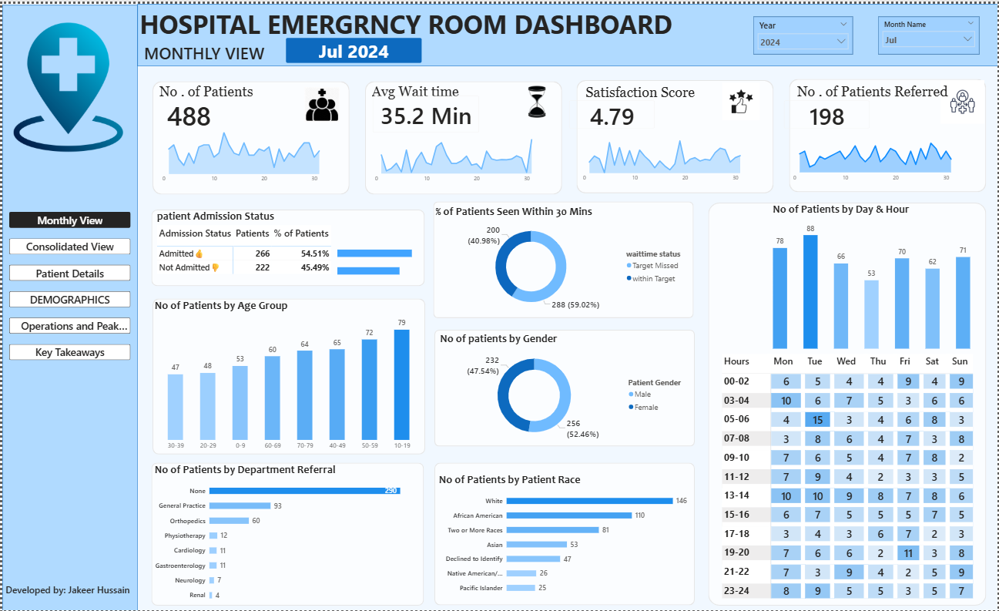
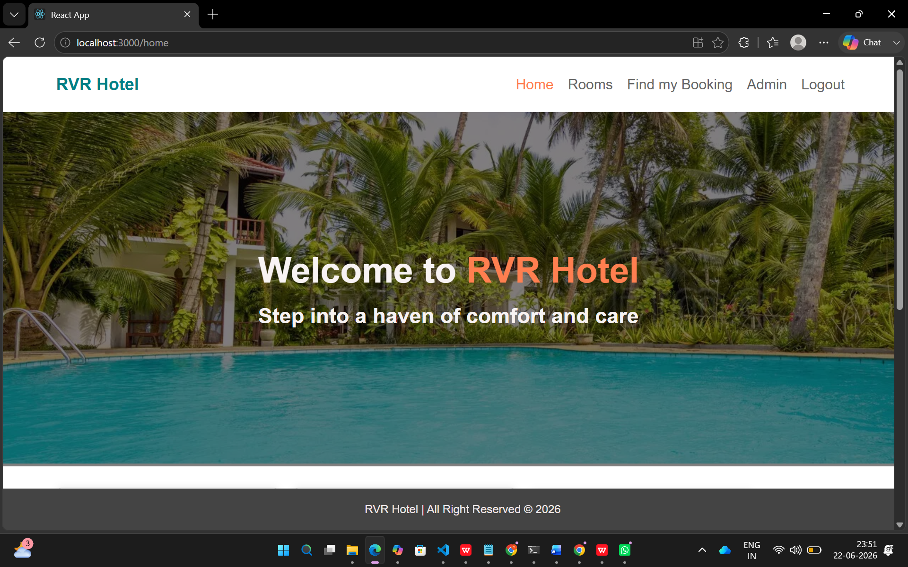

S JAKEER HUSSAIN
MCA Student | Power BI | Python | SQL | GenAI
Turning data into meaningful insights while building practical technology solutions.
About Me
I am an MCA student at RVR & JC College of Engineering with a strong passion for Data Analytics and Business Intelligence. I enjoy working with data, discovering patterns, and creating clear, meaningful visualizations that facilitate data-driven decision-making.
Through practical coursework and hands-on projects, I have developed experience in Power BI dashboard creation, data manipulation using Python, and query optimization with relational databases like MySQL and NoSQL engines like MongoDB.
In addition to analytics, I have core software development exposure—demonstrated by working on backend layers using Spring Boot, JPA, and Hibernate. I am also actively exploring Generative AI to complement analytical workflows and continuously enhance my technical toolkit.
Education
MCA 2nd Year (Graduation 2027)
Academic Performance
CGPA: 8.8 / 10.0
Core Focus
Data Analytics & Business Intelligence
Key Tools
Power BI, Python, SQL, GenAI
Technical Skills
Programming
Data Analytics & BI
Databases
Web Development
Backend & Frameworks
AI & Tools
Education
Master of Computer Applications (MCA)
RVR & JC College of Engineering
Current Status: MCA 2nd Year
Intermediate (10+2)
Score: 834 Marks
Secondary School Certificate (10th Class)
Score: 10 Points
Internship Experience
Data Analytics Intern
Domain: Data Analytics using Power BI
Key Responsibilities & Contributions:
- Participated actively in assigned data analytics projects and hands-on training sessions focused on Power BI.
- Completed data cleaning, modeling, and visualization tasks within stipulated project timelines.
- Maintained high standards of discipline, professionalism, and confidentiality throughout the internship term.
- Prepared and submitted technical project reports and presentations summarizing analytical insights upon completion.
Featured Projects

Hospital Emergency Room Dashboard
A dynamic, interactive Power BI dashboard designed to analyze hospital emergency room performance metrics, patient flow, wait times, and operational efficiency through clear visual representations.

Hotel Reservation System
A web-based application enabling users to browse room availability, inspect prices/descriptions, and complete online room bookings, while offering administrative tools for room and reservation management.
Certifications
Power BI Certificate
CSI Hyderabad Chapter
Data Analytics & VisualizationUnnati Soft Skills
Infosys (30-Day Program)
Professional Communication & LeadershipWhere I'm Headed
I am actively focusing on bridging data engineering, business intelligence, and intelligent applications to help organizations derive value from complex datasets.
Data Analytics & BI
Currently building skills in end-to-end dashboarding and metric tracking using Power BI.
Python & SQL
Exploring data manipulation, automation, and relational/NoSQL querying techniques.
Generative AI
Interested in integrating AI workflows to augment business decision-making processes.
Contact Me
Let's Connect
Feel free to reach out for career opportunities, queries, or technical collaborations.